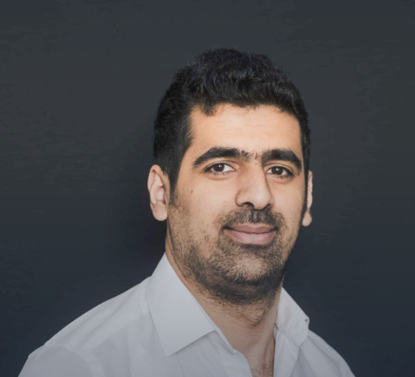
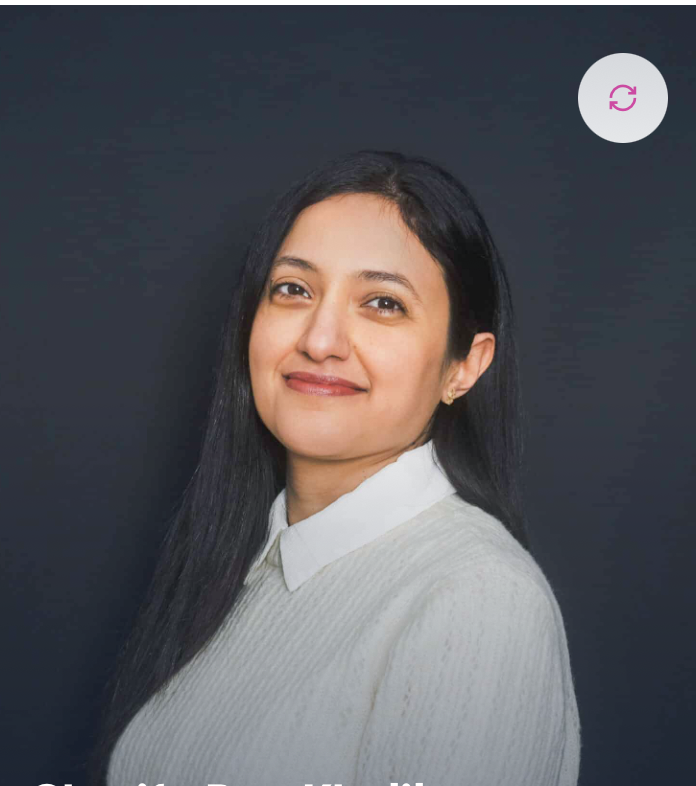
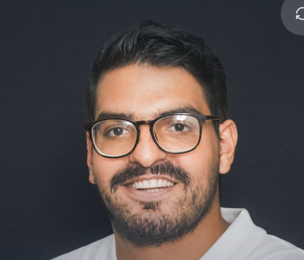
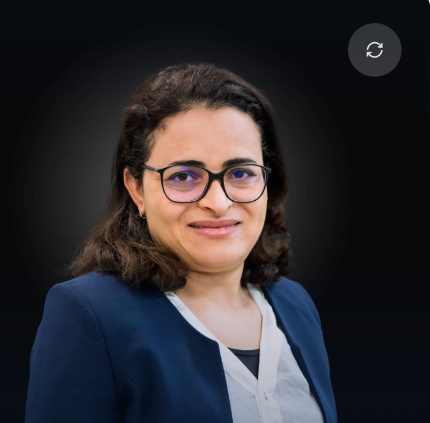
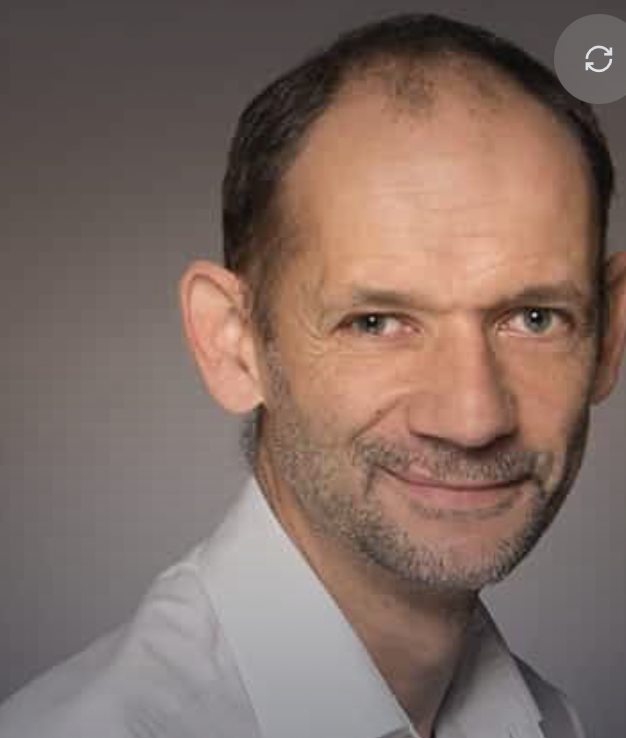
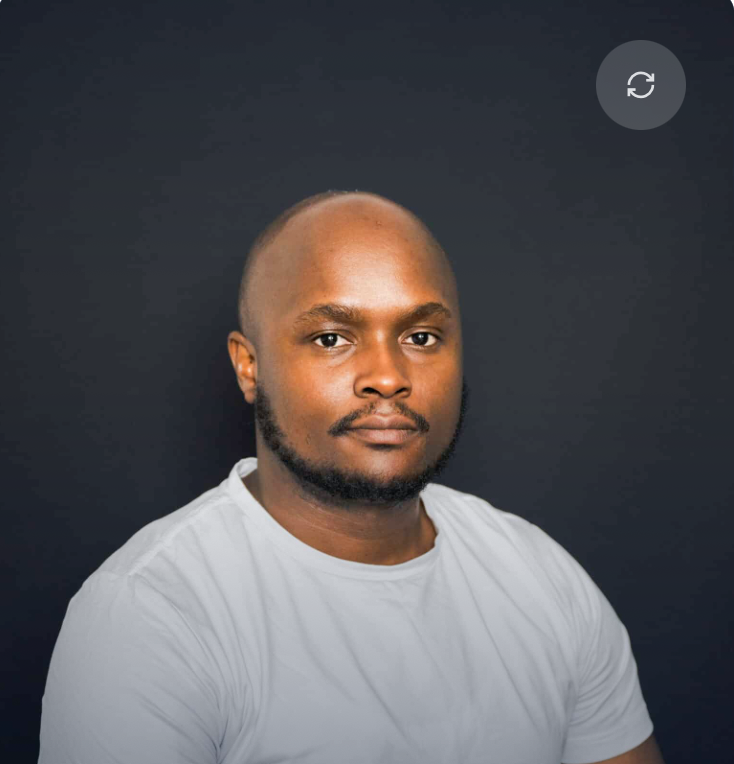

EFREI Paris Département Informatique
Des professeurs-chercheurs et des intervenants industriels passionnés par la transmission du savoir numérique.

Mohamed Hamidi a obtenu en 2019 un doctorat en sécurité multimédia et vision par ordinateur à l'Université Med V de Rabat. Sa thèse a été menée en collaboration avec deux laboratoires français, le LIB à Dijon et le PRISME à Orléans.

Cherifa a obtenu en 2019 un doctorat en cotutelle entre l'ENSI de Manouba en Tunisie et l'Université d'Orléans en France. Elle a rejoint l'Efrei en 2024.
Elle est diplômée ingénieure en informatique de l'ESI depuis 2006, puis a obtenu un Magistère en 2010 et un doctorat en 2021. Elle a rejoint l'Efrei en 2022.

Diplômé en ingénierie informatique de l'USEK en 2018, il a obtenu en 2024 un doctorat à l'Institut Polytechnique de Paris sur la gestion des courriels par les processus métier. Il a rejoint l'Efrei la même année.
Diplômé de l'UNSA et de Skema, Jacques André Augustin a développé son expertise en delivery IT et transformation digitale chez Accenture avant de rejoindre l'Efrei en 2010. Il y enseigne l'architecture des SI et le DevOps, et dirige depuis 2019 la majeure Software Engineering.

Diplômée ingénieure de l'ENSI en 2003, elle a ensuite obtenu un master en sciences des données en 2006 puis un doctorat en 2010 co-encadré par le CNAM et l'ENSI. Elle a rejoint l'Efrei en 2020.

Nicolas, ingénieur et docteur en informatique, enseigne à l'Efrei depuis plus de 20 ans. Passionné de Python et de C, il intervient également en mathématiques appliquées et contribue à l'évaluation d'outils numériques pédagogiques.

Yvan a obtenu en 2023 un doctorat en informatique préparé à la Sorbonne Université au sein de l'équipe MoVe du LIP6. Il y a également exercé comme attaché temporaire d'enseignement et de recherche.
Deep learning, NLP, IA générative et applications industrielles de l'apprentissage automatique.
Architectures distribuées, edge computing, optimisation des ressources et serverless.
Traitement de flux en temps réel, data lakes, analyse prédictive à grande échelle.